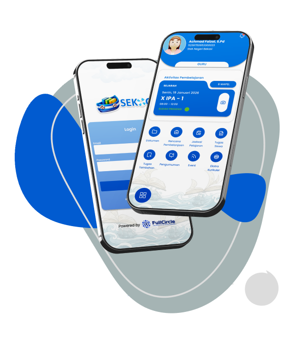
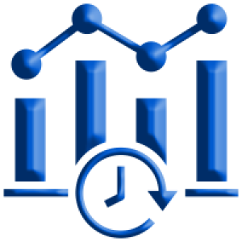
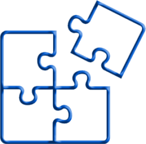

SEKOCI membantu semua proses menjadi otomatis, rapi, dan terkendali. Mulai dari pengelolaan data, layanan akademik, hingga komunikasi sekolah, semuanya tersusun dengan baik sehingga sekolah dapat fokus memberikan pelayanan terbaik.

Semua data terkait siswa, guru, dan kegiatan Sekolah tersimpan dalam satu platform.

Orang tua, guru dan siswa dapat mengakses data akademik dan administrasi kapan saja.

Sistem dapat disesuaikan dengan jumlah siswa dan kebutuhan sekolah kecil hingga besar.
Bisa digunakan di berbagai perangkat, untuk meningkatkan fleksibilitas pengguna.
Akses informasi akademik dan data siswa, melihat jadwal pelajaran dan materi belajar. Mengakses bank soal tugas dari guru.
Mengakses materi pembelajaran. Mengerjakan latihan soal atau ujian. Berdiskusi dengan guru dan teman melalui forum edukatif.
Mengajukan surat keterangan sekolah. Melakukan pembayaran SPP dan administrasi lainnya secara online.
Memantau kehadiran harian siswa, memantau perkembangan nilai dan performa belajar siswa. Menerima Notifikasi.
Menambahkan, mengedit, menghapus dan melihat data pengguna. Mengolah jadwal pelajaran dan pengumuman.
Melihat perkembangan akademik anak, jadwal pelajaran anak, dan mengakses pengumuman sekolah.
Mengolah jadwal mengajar, daftar siswa, dan penilaian siswa.
Melihat data pribadi, jadwal pelajaran, dan nilai akademik.
Akun orang tua bisa akses informasi siswa atau anak lebih dari satu dalam satu aplikasi.
Setiap sekolah yang berlangganan memiliki service terpisah sehingga data dapat diakses dengan cepat.
Dapat menjembatani dengan pihak lain. Contoh : e-MIS dan Dapodik.
Data pihak sekolah dijamin keamanannya karena perusahaan kami memiliki NOC dan SOC 24/7.